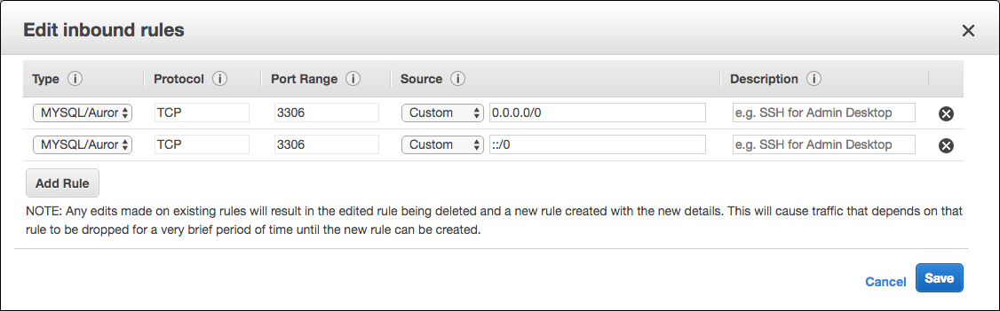
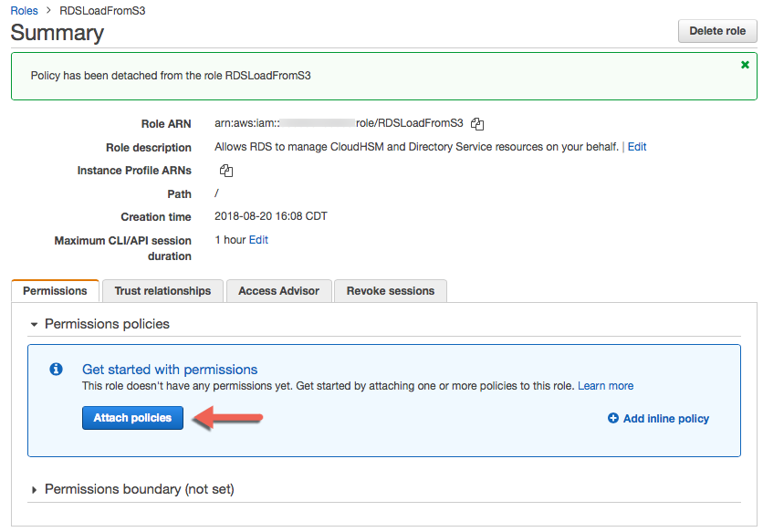

Link your AWS Account¶
Follow these instructions to link your AWS Account and RDS Aurora instance to Bipost API.
IMPORTANT NOTICE: Many settings suggested here are for testing purposes. If you are to use the following AWS services for production you may want to follow your company policies and understand how to use AWS security according to your needs.
Don't have an AWS account?¶
-
Create an AWS account here aws.amazon.com
-
AWS usually makes an automated verification phone call, we suggest to provide a land line.
- Provide payment information.
- Select Basic Support (free plan).
- Check if you can open RDS Dashboard, by searching under AWS services.
- Congrats you have an AWS account!
Check closest AWS Region to you location¶
Click the link above and hit HTTP Ping and look for the lowest latency.
Maybe you want to try this at different times of the day.
Take note of the closest region.

Get Canonical User ID from your IAM Home¶
- Upper right corner of your AWS console, click your account name (or follow next link).
- My Security Credentials.
- Click Continue to Security Credentials if dialog appears.
- Account Identifiers.
-
Copy AWS Account ID and Canonical User ID.
Copy the entire string that starts with AWS Account ID up to the very end of a long hex string of 64 characters.

-
Email the above to jaime@factorbi.com so we can configure a dedicated bucket for your API calls.
Q: Is it secure to provide these numbers?
Yes, we use your Canonical User ID to create and provide access to a new and dedicated S3 bucket for your AWS Account. Further on you will link this bucket to you RDS instance.
Create Aurora Instance¶
Aurora DB Details¶
- From AWS Console Home, upper right corner (next to you name) be sure to select the closest region to your location.
- From AWS Console Home, search RDS.
- From RDS Dashboard, click Instances.
- Launch DB Instance, blue button.
- Select Engine: Amazon Aurora, click select.
- DB Instance Class: for testing purposes select the smallest available, currently t2.small
- Multi-AZ Deployment: for testing purposes select No
- DB Instance Identifier: assign a name, lower-case and no special characters.
- Master Username: root
- Master Password: assign a hard password and store it in a secure place.
- Confirm Password.
- On your left pane it is displayed an estimated monthly cost. For further information check On-Demand Pricing: RDS Pricing
- Click Next Step, blue button.

Aurora Network & Security¶
- VPC: Create new VPC
- Subnet Group: Create new DB Subnet Group
- Publicly Accessible: Yes
- Availability Zone: No Preference
- VPC Security Group: Create new Security Group

Aurora Database Options¶
- DB Cluster Identifier: leave blank
- Database Name: leave blank
- Database Port: 3306
- DB Parameter Group: default.aurora5.6
- DB Cluster Parameter Group: default.aurora5.6
- Option Group: leave default
- Enable Encryption: No
Aurora Failover¶
- Priority: tier-0
Aurora Backup¶
- Backup Retention Period: 1 day
Aurora Monitoring¶
- Enable Enhanced Monitoring: No
Aurora Maintenance¶
- Auto Minor Version Upgrade: Yes
- Maintenance Windows: No Preference

Launch DB Instance¶
-
Click Launch DB Instance blue button.
-
This process may take a while, sometimes 30 minutes or more.
-
You can check Status of your instance by going to Instances on left navigation pane.
RDS Instance Security Group¶
Once the instance has Status: available proceed:
- Click check box way left of your DB Instance name.
- Click Instance Actions \ See Details gray button, on top.
-
Lookup for Security Groups and click the blue string to the right, it may appear as
default (sg-XXXXXXXX)
-
You are now on EC2 Dashboard and Security Group ID is already selected.
- Click Actions \ Edit inbound rules
- Click Add Rule, under Type select
MYSQL/Aurora - Source Custom and type value:
0.0.0.0/0 -
Repeat steps 6 & 7, and type value
::/0
-
Click Save blue button.
- Click Actions \ Edit outbound rules
- Verify if Type:
All traffic, Destination:Customand value:0.0.0.0/0is already set, if not, add the rule. - Go back to RDS Dashboard, select your instance, click Instance Actions \ Reboot, confirm with blue button on the right.
- Wait until Status is
availableand check if Security Groups are( active )
Create IAM Policy to Grant Access to S3¶
From this point on you need the newly S3 bucket ARN that we provided over email.
If you haven't emailed us with your Canonical User ID, please follow these steps.
- Open IAM Console.
- In the left navigation pane choose Policies.
- Create policy blue button.
-
Select Policy Generator
Effect:
AllowAWS Service:
Amazon S3Actions: check
GetObjectandGetObjectVersionAmazon Resource Name (ARN): arn you received over email, example:
arn:aws:s3:::bipost-000111222 -
Click Add Statement
-
Repeat step 4 adding
/*at the end of ARN bucket string, as follows:Effect:
AllowAWS Service:
Amazon S3Actions: check
GetObjectandGetObjectVersionAmazon Resource Name (ARN): example:
arn:aws:s3:::bipost-000111222/* -
Click Next Step blue button.
- Policy Name:
AllowAuroraToS3 - Optionally add Description.
-
Policy Document: double check that JSON looks like this:
{ "Version": "2012-10-17", "Statement": [ { "Sid": "Stmt9999999999999", "Effect": "Allow", "Action": [ "s3:GetObject", "s3:GetObjectVersion" ], "Resource": [ "arn:aws:s3:::bipost-000111222" ] }, { "Sid": "Stmt9999999777999", "Effect": "Allow", "Action": [ "s3:GetObject", "s3:GetObjectVersion" ], "Resource": [ "arn:aws:s3:::bipost-000111222/*" ] } ] } -
Click Create Policy
Further information from AWS go to: Allowing Amazon Aurora to Access Amazon S3 Resources
Create IAM Role to Allow RDS Access to S3¶
- Open IAM Console.
- In the left navigation pane choose Roles.
- Create New Role blue button.
-
Choose AWS Service Role, scroll down and select Amazon RDS
-
Attach Policy, leave blank and click Next Step blue button.
- Role name:
RDSLoadFromS3 - Click Create role blue button.
- Click on your newly created role. This will open a Summary.
-
Under Permissions, click Attach Policy blue button.

-
Use Filter and select Policy Type: Customer Managed
- Click the check box of your newly created Policy:
AllowAuroraToS3 - Click Attach Policy blue button.
- Copy Role ARN string and save it for further use. It may look like this:
arn:aws:iam::123456789012:role/RDSLoadFromS3
Further information from AWS go to: Creating an IAM Role to Allow Amazon Aurora to Access AWS Services
Set IAM Role to Aurora Cluster¶
- Open RDS console.
- Choose Clusters on left pane.
- Click check box of your newly cluster.
- Click Manage IAM Roles gray button, on top.
- Select the role you just created:
RDSLoadFromS3and click Done, blue button.
Create Cluster Parameter Group¶
If you are already using a custom DB Cluster Parameter Group, you can select that group instead of creating a new DB Cluster Parameter Group.
- Open RDS console.
- On left pane go to Parameter Groups.
-
Click Create Parameter Group blue button on top.
Parameter Group Family:
aurora5.6Type:
DB Cluster Parameter GroupGroup Name:
AuroraClusterAllowAWSAccessDescription:
Allow cluster access to Amazon S3 -
Click Create blue button.
- Click check box on your new
auroraclusterallowawsaccessparameter group and click Edit Parameters gray button on top. -
Set the following:
Name Edit Values Example aurora_load_from_s3_role paste Role ARN string arn:aws:iam::123456789012:role/RDSLoadFromS3aurora_select_into_s3_role paste Role ARN string arn:aws:iam::123456789012:role/RDSLoadFromS3aws_default_s3_role paste Role ARN string arn:aws:iam::123456789012:role/RDSLoadFromS3 -
Click Save Changes blue button.
Further information from AWS go to: Associating an IAM Role with a DB Cluster
Create DB Parameter Group¶
If you are already using a custom DB Parameter Group, you can select that group instead of creating a new DB Parameter Group.
- Open RDS console.
- On left pane go to Parameter Groups.
-
Click Create Parameter Group blue button on top.
Parameter Group Family:
aurora5.6Type:
DB Parameter GroupGroup Name:
AuroraInstanceAllowAWSAccessDescription:
Allow instance access to Amazon S3 -
Click Create blue button.
- Click check box on your new
aurorainstanceallowawsaccessparameter group and click Edit Parameters gray button on top. -
Set the following:
Name Edit Values log_bin_trust_function_creators 1 max_allowed_packet 1073741824 max_connections 16000 max_user_connections 4294967295 -
Click Save Changes blue button.
Set Cluster Parameter Group¶
- Open RDS console.
- On left pane go to Clusters.
- Click check box on your new cluster.
- Click Modify Cluster gray button on top.
- Under Database Options, set DB Cluster Parameter Group to
auroraclusterallowawsaccess. - Click check box Apply Immediately and click Continue blue button.
- Review changes and click Modify Cluster blue button.
Set Instance Parameter Group¶
- Open RDS console.
- On left pane go to Instances.
- Click check box on your new instance.
- Click Instance Actions \ Modify gray button on top.
- Under Database Options, set DB Parameter Group to
aurorainstanceallowawsaccess - You may also notice that DB Cluster Parameter Group is set to
auroraclusterallowawsaccess - Click check box Apply Immediately and click Continue blue button.
- Review changes and click Modify DB Instance blue button.
- Click Instance Actions \ Reboot gray button on top.
- Confirm reboot with blue button.
Verify Instance Configuration¶
- Open RDS console.
- On left pane go to Instances.
- Click check box on your new instance.
- Click Instance Actions \ See Details gray button on top.
-
Verify the following:
Enpoint: ( authorized )
Parameter Group: aurorainstanceallowawsaccess ( in-sync )
DB Cluster Parameter Group: auroraclusterallowawsaccess ( in-sync )
Security Groups: default (sg-XXXXXXXX) ( active )
Publicly Accessible: Yes
DB Instance Status: available
Test connection to your RDS Aurora¶
-
Download and install any MySQL client of your preference:
For Mac you may use "Sequel Pro" or "MySQL Workbench" For Windows you may use "MySQL Workbench" or "HeidiSQL" -
On your AWS Console go to RDS Dashboard, select your instance and copy the Cluster Endpoint, which is a blue string with more than 60 characters.
-
Launch your MySQL client and configure a new connection:
Name: type any name of your preference.
Host: Paste the Cluster Endpoint and delete the suffix :3306
Username: root
Password: type the Master Password
Port: 3306
Database: Leave blank
Connect using SSL: No
-
Click Connect and verify that you can successfully connect to your RDS instance.
Send Instance Connection Details to Factor BI¶
Email all the information you used to Test connection to your RDS Aurora to jaime@factorbi.com so we can add your instance to our Bipost API.
Security of your RDS Instance for Production¶
If your are ready to use Bipost API for production, we highly recommend the following:
- Use MySQL client to create a new user.
- Set a strong password.
-
Set the following Global Privileges:

Console Access to Bucket¶
Bipost synchronization uses S3 to upload the data that is extracted from the on-premises database. The bucket is located within a Factor BI AWS account so we can efficiently handle API calls, patches and new releases.
Remember, we create a unique S3 bucket for each one of our customers, so nothing gets mixed up.
Sometimes you may want to access this bucket and review files and folders.
To accomplish this we provide an AWS Console access with a user, password and a direct link to your bucket.